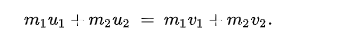
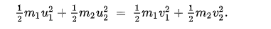
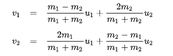
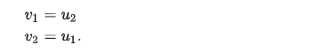

PHYSICS
Introduction
Physics is a natural science that happens all around us, all the time, everyday. We try to understand the universe and everything in it. What is physics? Physics is the branch of science which deals with matter and its relation to energy. It involves study of physical and natural phenomena around us. The physics of a ball dropping is actually decently complex and can take a lot to understand. For example, a bouncing ball in a simplified case, the ball falls in line with the force of gravity, which always points directly downward. On earth, this acceleration due to gravity is 9.8 m/s2 (g= 9.8 m/s2). This means, in essence, that for every second for falling, the ball's velocity will accelerate by 9.8 m/s. Velocity is the speed of something in a certain direction.
There are many applications to physics today. For example, the transportation industry is no stranger to the manipulation of everyday physics. Cars and trains utilize the wheel, which provides a smooth, steady motion. Newton's laws of motion are at work as mechanical force and acceleration, action, reaction and inertia. Airplanes take it one step further, allowing lift as well as forward momentum. They manipulate physics – much like birds – by creating lift through wing shape as well as the wing’s angle – both of which serve to alter airflow.
Another example of physics in action is with a simple lever – most easily observed at a park. Levers come in three flavors, each with varying fulcrum locations. They serve to magnify force, lessening the effort needed to move an object on the opposing end. A simple “see-saw” at a park consists of a lever (the locations for sitting) and the fulcrum (placed in the middle). The two opposing forces counterbalance each other, creating a smooth ride through the air. At the same park you'll see a slide, a device that combines the stairs going up with the slide going down, both examples of inclined planes. The inclined plane eases the effort of climbing by spreading it over a longer distance. The smooth slide returns you gently to earth, slowing the influence of gravity just enough to make it fun.
Physics is all relative. This theme resonates through Einstein’s special and general theories of relativity. Einstein's work is crucially important to GPS in your phone, for example. It takes radio signals from several satellites orbiting the Earth and calculates your location accurate to several centimeters. Because the speed and height of the satellites alters the signal very slightly, the smartphone adjusts the results using Einstein's theories. Without a helping hand from relativity, GPS would be far less accurate or useful.
For this simulation, I had to use elastic collision, which enquired using the one dimensional newtonian equation. An elastic collision is an encounter between two bodies in which the total kinetic energy of the two bodies remains the same. In an ideal, perfectly elastic collision, there is no net conversion of kinetic energy into other forms such as heat, noise, or potential energy. n an elastic collision, both momentum and kinetic energy are conserved. Consider particles 1 and 2 with masses m1, m2, and velocities u1, u2 before collision, v1, v2 after collision. The conservation of the total momentum before and after the collision is expressed by:

Likewise, the conservation of the total kinetic energy is expressed by:

These equations may be solved directly to find v1, v2 when u1, u2 are known:

If both masses are the same, we have a trivial solution:

This simply corresponds to the bodies exchanging their initial velocities to each other.
As can be expected, the solution is invariant under adding a constant to all velocities, which is like using a frame of reference with constant translational velocity. Indeed, to derive the equations, one may first change the frame of reference so that one of the known velocities is zero, determine the unknown velocities in the new frame of reference, and convert back to the original frame of reference.